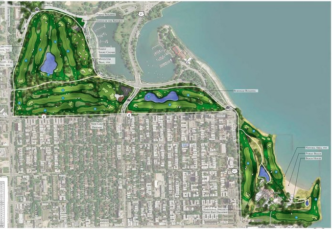

This page is up to date as of July 30, 2019.
For more current information, see recent Updates.
Sign up:Sign up to receive Jackson Park Watch Updates to get regular information and ideas for timely action. E-mail jacksonparkwatch@gmail.com with the simple request “sign me up.” To preserve privacy, Updates are sent via bcc. Donate |
Golf course merger/ expansion proposedClosely related to the Obama Presidential Center and major Jackson Park road reconfigurations is the proposal, first announced to the public in December 2016, to merge and expand the Jackson Park and South Shore golf courses in order to attract a new clientele. |
While there is broad support for improvements to the existing golf courses, examination of the current proposal – its history, its design, its treatment of local golfers, its financing, its outsized claims of local economic benefits – has revealed serious gaps in the plan and there has been significant community opposition.
At this point, community questions and criticisms remain unanswered as was recognized by the recent Tribune editorial headlined “Give Chicagoans more details about the planned Tiger Woods golf course.” No formal proposal for the golf course merger/expansion has been submitted to the Chicago Plan Commission. Significantly, Mayor Lori
Golf course proposal has major flaws:
The current plan (see graphic below) for the golf course merger/expansion has significant problems, including:


Although a top Park District official has assured JPW that no work on this golf course expansion can take place in the summer of 2019, community concerns have not been addressed. JPW is actively monitoring activities relating to the proposed golf course project and is working with other advocates for needed revisions.
A complicated back story
In 2014, as part of its bid to the Obama Foundation offering space in Jackson Park for the Obama Presidential Library, the University of Chicago commissioned noted golf course architect Tom Doak to redesign the Jackson Park and South Shore courses for inclusion in the UChicago bid package. The commission and design were unknown to the public until October 2018, when the bid documents were released as part of the lawsuit brought by Protect Our Parks. The proposal was expansive and expensive (requiring lake fill) and presumably judged not politically and financially viable, but the general idea persisted.
In spring 2015, representatives of the University connected the Park District superintendent with Mark Rolfing, head of Rolfing Sports, Inc., initiating discussions about merging the courses and establishing a combined course as an upscale venue for PGA events. Between September 2015 and December 2016 Rolfing Sports was paid $120,000 to develop the plans for the project. All of this interaction was behind the scenes, unknown to the public, and never formally reviewed or approved by the Park District board.
In August 2016 Park District CEO Michael Kelly sent an email to the private account of Mayor Rahm Emanuel, describing the project in full and stressing that it was important that it seem as if the community had requested the work though at that point the community had no inkling of the plan.
In summer 2016, there was more action behind the scenes. President Obama privately affirmed his support for the initiative to bring major golf tournaments to Jackson Park by 2021 to coincide with the planned opening of the Obama Center. He became personally involved in the project when he placed a call to Tiger Woods, encouraging him to serve as lead designer. Even so. the Obama Foundation has repeatedly asserted that the golf project is a separate initiative, totally unrelated to the OPC.
In December 2016, Mayor Rahm Emanuel and Park District CEO Michael Kelly announced with great fanfare the formation of the Chicago Parks Golf Alliance (CPGA), a private entity –incorporated a year earlier, in October 2015, with Rolfing as its president and with a Park District Commissioner on its Board – with the purpose of developing plans and raising private funds for the “upgrade” of the Jackson Park and South Shore Golf Courses. While details were and continue to be scant, the announcement outlined a $30 million, four-year project to combine the two separate courses into a single 18-hole, PGA-grade course to be designed by Tiger Woods, all within the footprints of the existing two golf courses. Of that $30 million tab, the Park District would provide $5 million.
In January 2017 the Park District Board of Commissioners was asked to approve a $1.1 million design services contract with SmithGroupJJR, Inc., an engineering consulting firm hired to develop plans for the merged course.
In June 2017, the CPGA unveiled its proposed design for the merger and expansion of the courses at a public meeting at the South Shore Cultural Center where plans for the Obama Presidential Center and related road closures and realignments were also presented. Contrary to earlier assurances, the design expanded significantly beyond the footprints of the current Jackson Park and South Shore golf courses, did not relocate the driving range south of Hayes Drive, and obliterated non-golf recreational facilities, including the South Shore Nature Sanctuary. It also required extensive public infrastructure work — closing Marquette Drive, constructing two underpasses, and erecting shoreline revetments at South Shore. No information about the costs or sources of funding for these public works was provided, but subsequent reports put the estimate at $60 million.
In subsequent meetings through the end of 2017 and into 2018, the basic footprint of the merged golf course was never modified in spite of widespread and publicly-voiced community concerns.
In January 2019 the Park District Board extended its contract with SmithGroupJJR, Inc. for an additional $2.7 million to prepare design and bid documents relating to the golf course project. That work was to continue, in various phases, through the summer and fall of 2019. Most recently rumors of new attempts to move the project forward have surfaced.
WHAT YOU CAN DO
JPW urges those concerned about the golf course merger/expansion plans to communicate those concerns to local officials and media outlets. See the
Take Action page for suggestions about who to contact along with their e-mail addresses.